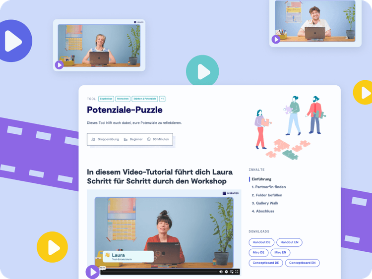

Entdecke fast 50 Tutorial-Videos zu unseren Workshops
9 Spaces entwickelt sich weiter zur Videoplattform. Auf dieser Seite findest du eine Liste mit allen Tutorial-Videos auf 9 Spaces.
Unsere Video-Anleitungen sind nur mit einem Solo oder Business Plan sichtbar. Mehr erfahren


Infogespräch
Buche ein kostenloses Infogespräch mit dem Neue-Narrative-Team
Lass uns darüber austauschen, wie dein Team oder deine Organisation das volle Potenzial von 9 Spaces ausschöpfen kann. Mit echten Beispielen aus anderen Organisationen.